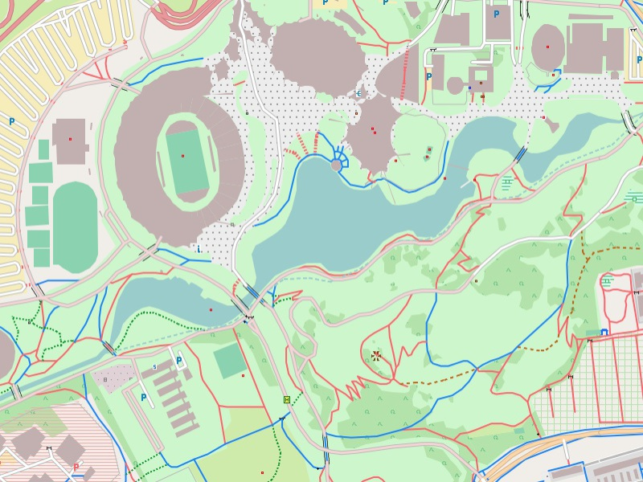

Garmin GPS-Device: Installation on a micro SD card:
- Download and unzip the install image of the Freizeitkarte map
- Insert micro SD card into your computer (using an adaptor)
- Copy the file "gmapsupp.img" into the folder "/garmin" on your micro SD card
Microsoft Windows: Installation for Garmin BaseCamp:
- Download and unzip the installation program of the Freizeitkarte
- Close BaseCamp (if still running)
- Install map (double click on installation program)
- Start BaseCamp

Munich: The Olympic Park is probably Germany's most famous sports venue.
Apple Mac OS X: Installation for Garmin BaseCamp:
- Download and unzip the install image of the Freizeitkarte map
- Close BaseCamp (if still running)
- Install map (double click on installation program)
- Start BaseCamp
All Operating Systems: Installation for QLandkarte:
- Download image folder of the Freizeitkarte map
- Unzip into target folder
- Start QLandkarte
- File -> Load map
- Open tdb-file (e.g. "Freizeitkarte_Deutschland.tdb")
- Open base map (in the same directory, e.g. "Freizeitkarte_Deutschland.img")
Note:
- for OS X and Windows an installed Garmin BaseCamp is required
- for the installation under OS X the program MapManager will be needed as well
- on your micro SD card you may have to create the folder "Garmin" first
- installation of the map onto the internal memory of your GPS-device is not recommended
- alternatively you can transfer the map onto the memory card of your GPS-device using an USB cable
- alternatively you can also transfer selected map tiles onto the memory card of your GPS-device using Garmin MapInstall
- we recommend to the set the display details in BaseCamp to "Maximum"
- the map should be working with Garmin MapSource as well (not tested")